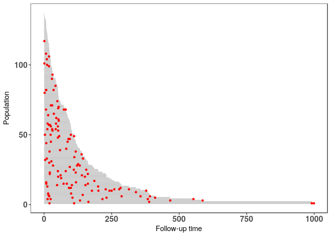
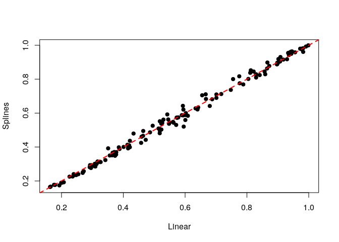
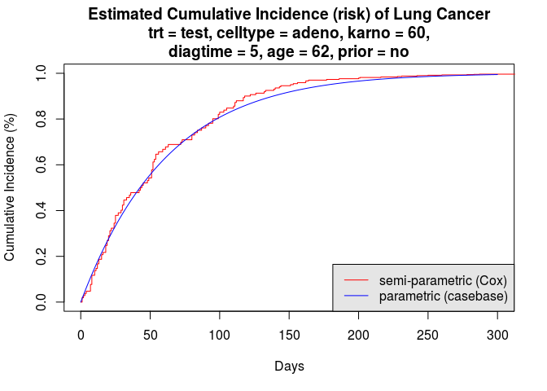

Smooth Hazard
Methodological details¶
Case-base sampling was proposed by Hanley and Miettinen, 2009 as a way to fit smooth-in-time parametric hazard functions via logistic regression. The main idea, which was first proposed by Mantel, 1973 and then later developped by Efron, 1977, is to sample person-moments, i.e. discrete time points along an subject's follow-up time, in order to construct a base series against which the case series can be compared.
This approach allows the explicit inclusion of the time variable into the model, which enables the user to fit a wide class of parametric hazard functions. For example, including time linearly recovers the Gompertz hazard, whereas including time logarithmically recovers the Weibull hazard; not including time at all corresponds to the exponential hazard.
The theoretical properties of this approach have been studied in Saarela and Arjas, 2015 and Saarela, 2015.
First example¶
The first example we discuss uses the well-known veteran dataset,
which is part of the survival package. As we can see below, there is
almost no censoring, and therefore we can get a good visual
representation of the survival function:
set.seed(12345) library(survival) data(veteran) table(veteran$status)
## ## 0 1 ## 9 128
evtimes <- veteran$time[veteran$status == 1] hist(evtimes, nclass = 30, main = '', xlab = 'Survival time (days)', col = 'gray90', probability = TRUE) tgrid <- seq(0, 1000, by = 10) lines(tgrid, dexp(tgrid, rate = 1.0/mean(evtimes)), lwd = 2, lty = 2, col = 'red')

As we can see, the empirical survival function ressembles an exponential distribution.
We will first try to estimate the hazard function parametrically using some well-known regression routines. But first, we will reformat the data slightly.
veteran$prior <- factor(veteran$prior, levels = c(0, 10), labels = c("no","yes")) veteran$celltype <- factor(veteran$celltype, levels = c('large', 'squamous', 'smallcell', 'adeno')) veteran$trt <- factor(veteran$trt, levels = c(1, 2), labels = c("standard", "test"))
Using the eha package, we can fit a Weibull form, with different
values of the shape parameter. For shape = 1, we get an exponential
distribution:
pacman::p_load(eha) y <- with(veteran, Surv(time, status)) model1 <- weibreg(y ~ karno + diagtime + age + prior + celltype + trt, data = veteran, shape = 1) summary(model1)
## Call: ## weibreg(formula = y ~ karno + diagtime + age + prior + celltype + ## trt, data = veteran, shape = 1) ## ## Covariate Mean Coef Exp(Coef) se(Coef) Wald p ## karno 68.419 -0.031 0.970 0.005 0.000 ## diagtime 8.139 0.000 1.000 0.009 0.974 ## age 57.379 -0.006 0.994 0.009 0.505 ## prior ## no 0.653 0 1 (reference) ## yes 0.347 0.049 1.051 0.227 0.827 ## celltype ## large 0.269 0 1 (reference) ## squamous 0.421 -0.377 0.686 0.273 0.166 ## smallcell 0.206 0.443 1.557 0.261 0.090 ## adeno 0.104 0.736 2.087 0.294 0.012 ## trt ## standard 0.477 0 1 (reference) ## test 0.523 0.220 1.246 0.199 0.269 ## ## log(scale) 2.811 16.633 0.713 0.000 ## ## Shape is fixed at 1 ## ## Events 128 ## Total time at risk 16663 ## Max. log. likelihood -716.16 ## LR test statistic 70.1 ## Degrees of freedom 8 ## Overall p-value 0.00000000000464229
If we take shape = 0, the shape parameter is estimated along with the
regression coefficients:
model2 <- weibreg(y ~ karno + diagtime + age + prior + celltype + trt, data = veteran, shape = 0) summary(model2)
## Call: ## weibreg(formula = y ~ karno + diagtime + age + prior + celltype + ## trt, data = veteran, shape = 0) ## ## Covariate Mean Coef Exp(Coef) se(Coef) Wald p ## karno 68.419 -0.032 0.968 0.005 0.000 ## diagtime 8.139 0.001 1.001 0.009 0.955 ## age 57.379 -0.007 0.993 0.009 0.476 ## prior ## no 0.653 0 1 (reference) ## yes 0.347 0.047 1.048 0.229 0.836 ## celltype ## large 0.269 0 1 (reference) ## squamous 0.421 -0.428 0.651 0.278 0.123 ## smallcell 0.206 0.462 1.587 0.262 0.078 ## adeno 0.104 0.792 2.208 0.300 0.008 ## trt ## standard 0.477 0 1 (reference) ## test 0.523 0.246 1.279 0.203 0.224 ## ## log(scale) 2.864 17.537 0.671 0.000 ## log(shape) 0.075 1.077 0.066 0.261 ## ## Events 128 ## Total time at risk 16663 ## Max. log. likelihood -715.55 ## LR test statistic 65.1 ## Degrees of freedom 8 ## Overall p-value 0.0000000000465393
Finally, we can also fit a Cox proportional hazard:
model3 <- coxph(y ~ karno + diagtime + age + prior + celltype + trt, data = veteran) summary(model3)
## Call: ## coxph(formula = y ~ karno + diagtime + age + prior + celltype + ## trt, data = veteran) ## ## n= 137, number of events= 128 ## ## coef exp(coef) se(coef) z Pr(>|z|) ## karno -0.0328153 0.9677173 0.0055078 -5.96 0.0000000026 *** ## diagtime 0.0000813 1.0000813 0.0091361 0.01 0.9929 ## age -0.0087065 0.9913313 0.0093003 -0.94 0.3492 ## prioryes 0.0715936 1.0742187 0.2323054 0.31 0.7579 ## celltypesquamous -0.4012917 0.6694548 0.2826886 -1.42 0.1557 ## celltypesmallcell 0.4602688 1.5844999 0.2662207 1.73 0.0838 . ## celltypeadeno 0.7947747 2.2139422 0.3028777 2.62 0.0087 ** ## trttest 0.2946028 1.3425930 0.2075496 1.42 0.1558 ## --- ## Signif. codes: 0 '***' 0.001 '**' 0.01 '*' 0.05 '.' 0.1 ' ' 1 ## ## exp(coef) exp(-coef) lower .95 upper .95 ## karno 0.968 1.033 0.957 0.978 ## diagtime 1.000 1.000 0.982 1.018 ## age 0.991 1.009 0.973 1.010 ## prioryes 1.074 0.931 0.681 1.694 ## celltypesquamous 0.669 1.494 0.385 1.165 ## celltypesmallcell 1.584 0.631 0.940 2.670 ## celltypeadeno 2.214 0.452 1.223 4.008 ## trttest 1.343 0.745 0.894 2.017 ## ## Concordance= 0.736 (se = 0.03 ) ## Rsquare= 0.364 (max possible= 0.999 ) ## Likelihood ratio test= 62.1 on 8 df, p=0.00000000018 ## Wald test = 62.4 on 8 df, p=0.00000000016 ## Score (logrank) test = 66.7 on 8 df, p=0.0000000000219
As we can see, all three models are significant, and they give similar
information: karno and celltype are significant predictors, both
treatment is not.
The method available in this package makes use of case-base sampling. That is, person-moments are randomly sampled across the entire follow-up time, with some moments corresponding to cases and others to controls. By sampling person-moments instead of individuals, we can then use logistic regression to fit smooth-in-time parametric hazard functions. See the previous section for more details.
First, we will look at the follow-up time by using population-time plots:
# create popTime object pt_veteran <- casebase::popTime(data = veteran)
## 'time' will be used as the time variable ## 'status' will be used as the event variable
class(pt_veteran)
## [1] "popTime" "data.table" "data.frame"
# plot method for objects of class 'popTime' plot(pt_veteran)

Population-time plots are a useful way of visualizing the total follow-up experience, where individuals appear on the y-axis, and follow-up time on the x-axis; each individual's follow-up time is represented by a gray line segment. For convenience, we have ordered the patients according to their time-to-event, and each event is represented by a red dot. The censored observations (of which there is only a few) correspond to the grey lines which do not end with a red dot.
Next, we use case-base sampling to fit a parametric hazard function via logistic regression. First, we will include time as a linear term; as noted above, this corresponds to an Gompertz hazard.
library(casebase) model4 <- fitSmoothHazard(status ~ time + karno + diagtime + age + prior + celltype + trt, data = veteran, ratio = 100)
## 'time' will be used as the time variable
summary(model4)
## ## Call: ## glm(formula = formula, family = binomial, data = sampleData) ## ## Deviance Residuals: ## Min 1Q Median 3Q Max ## -0.429 -0.150 -0.120 -0.100 3.417 ## ## Coefficients: ## Estimate Std. Error z value Pr(>|z|) ## (Intercept) -2.699994 0.721557 -3.74 0.00018 *** ## time 0.000337 0.000645 0.52 0.60120 ## karno -0.032418 0.005292 -6.13 0.0000000009 *** ## diagtime 0.003660 0.009309 0.39 0.69421 ## age -0.006430 0.009290 -0.69 0.48882 ## prioryes 0.004979 0.231421 0.02 0.98284 ## celltypesquamous -0.430289 0.284448 -1.51 0.13035 ## celltypesmallcell 0.394714 0.262645 1.50 0.13288 ## celltypeadeno 0.700917 0.298791 2.35 0.01898 * ## trttest 0.210185 0.201721 1.04 0.29743 ## --- ## Signif. codes: 0 '***' 0.001 '**' 0.01 '*' 0.05 '.' 0.1 ' ' 1 ## ## (Dispersion parameter for binomial family taken to be 1) ## ## Null deviance: 1436.2 on 12927 degrees of freedom ## Residual deviance: 1365.7 on 12918 degrees of freedom ## AIC: 1386 ## ## Number of Fisher Scoring iterations: 8
Since the output object from fitSmoothHazard inherits from the glm
class, we see a familiar result when using the function summary.
The main purpose of fitting smooth hazard functions is that it is then
relatively easy to compute absolute risks. For example, we can use the
function absoluteRisk to compute the mean absolute risk at 90 days,
which can then be compared to the empirical measure.
absRisk4 <- absoluteRisk(object = model4, time = 90) mean(absRisk4)
## [1] 0.58
ftime <- veteran$time mean(ftime <= 90)
## [1] 0.55
We can also fit a Weibull hazard by using a logarithmic term for time:
model5 <- fitSmoothHazard(status ~ log(time) + karno + diagtime + age + prior + celltype + trt, data = veteran, ratio = 100)
## 'time' will be used as the time variable
summary(model5)
## ## Call: ## glm(formula = formula, family = binomial, data = sampleData) ## ## Deviance Residuals: ## Min 1Q Median 3Q Max ## -0.460 -0.152 -0.119 -0.097 3.427 ## ## Coefficients: ## Estimate Std. Error z value Pr(>|z|) ## (Intercept) -3.01674 0.75975 -3.97 0.0000716623 *** ## log(time) 0.06906 0.07197 0.96 0.337 ## karno -0.03314 0.00550 -6.02 0.0000000017 *** ## diagtime -0.00147 0.00915 -0.16 0.872 ## age -0.00482 0.00931 -0.52 0.604 ## prioryes 0.05189 0.22963 0.23 0.821 ## celltypesquamous -0.41823 0.27978 -1.49 0.135 ## celltypesmallcell 0.44832 0.26406 1.70 0.090 . ## celltypeadeno 0.75912 0.30388 2.50 0.012 * ## trttest 0.26403 0.20488 1.29 0.197 ## --- ## Signif. codes: 0 '***' 0.001 '**' 0.01 '*' 0.05 '.' 0.1 ' ' 1 ## ## (Dispersion parameter for binomial family taken to be 1) ## ## Null deviance: 1436.2 on 12927 degrees of freedom ## Residual deviance: 1364.9 on 12918 degrees of freedom ## AIC: 1385 ## ## Number of Fisher Scoring iterations: 8
With case-base sampling, it is straightforward to fit a semi-parametric hazard function using splines, which can then be used to estimate the mean absolute risk.
# Fit a spline for time library(splines) model6 <- fitSmoothHazard(status ~ bs(time) + karno + diagtime + age + prior + celltype + trt, data = veteran, ratio = 100)
## 'time' will be used as the time variable
summary(model6)
## ## Call: ## glm(formula = formula, family = binomial, data = sampleData) ## ## Deviance Residuals: ## Min 1Q Median 3Q Max ## -0.456 -0.154 -0.120 -0.095 3.522 ## ## Coefficients: ## Estimate Std. Error z value Pr(>|z|) ## (Intercept) -2.956878 0.725636 -4.07 0.0000460384 *** ## bs(time)1 1.643445 1.034495 1.59 0.1121 ## bs(time)2 -2.537484 1.756768 -1.44 0.1486 ## bs(time)3 1.695725 0.985698 1.72 0.0854 . ## karno -0.032223 0.005358 -6.01 0.0000000018 *** ## diagtime 0.000667 0.009132 0.07 0.9418 ## age -0.006319 0.009358 -0.68 0.4995 ## prioryes 0.006882 0.235625 0.03 0.9767 ## celltypesquamous -0.397446 0.283847 -1.40 0.1614 ## celltypesmallcell 0.465699 0.264884 1.76 0.0787 . ## celltypeadeno 0.866398 0.304030 2.85 0.0044 ** ## trttest 0.254260 0.207728 1.22 0.2209 ## --- ## Signif. codes: 0 '***' 0.001 '**' 0.01 '*' 0.05 '.' 0.1 ' ' 1 ## ## (Dispersion parameter for binomial family taken to be 1) ## ## Null deviance: 1436.2 on 12927 degrees of freedom ## Residual deviance: 1362.9 on 12916 degrees of freedom ## AIC: 1387 ## ## Number of Fisher Scoring iterations: 8
absoluteRisk(object = model6, time = 90)
## ## 90 0.3 0.23 0.35 0.31 0.23 0.77 0.49 0.17 0.44 0.23 0.28 0.52 0.62 0.19 ## ## 90 0.26 0.59 0.63 0.86 0.37 0.6 0.83 0.57 0.59 0.9 0.4 0.91 0.69 0.57 0.41 ## ## 90 0.83 0.97 0.37 0.9 0.41 0.49 0.58 0.9 0.57 0.39 0.59 0.46 0.68 0.74 0.8 ## ## 90 0.81 0.99 0.62 0.92 0.55 0.52 0.84 0.49 0.98 0.56 0.53 0.25 0.56 0.36 ## ## 90 0.42 0.64 0.28 0.28 0.32 0.19 0.19 0.25 0.29 0.35 0.48 0.18 0.22 0.24 ## ## 90 0.51 0.47 0.31 0.29 0.82 0.39 0.17 0.71 0.83 0.3 0.16 0.24 0.54 0.29 ## ## 90 0.37 0.18 0.54 0.94 0.63 0.98 0.95 0.68 0.92 0.96 0.98 0.71 0.54 0.44 ## ## 90 0.4 0.54 0.54 0.56 0.77 0.96 0.88 0.96 0.96 0.39 0.64 0.82 0.84 0.85 ## ## 90 0.8 0.9 0.71 1 0.96 0.7 0.48 0.59 0.93 0.95 0.96 0.55 0.4 0.89 0.5 0.84 ## ## 90 0.54 0.31 0.35 0.5 0.4 0.31 0.89
As we can see from the summary, there is little evidence that splines actually improve the fit. Moreover, we can see that estimated individual absolute risks are essentially the same when using either a linear term or splines:
linearRisk <- absoluteRisk(object = model4, time = 90, newdata = veteran) splineRisk <- absoluteRisk(object = model6, time = 90, newdata = veteran) plot(linearRisk, splineRisk, xlab = "Linear", ylab = "Splines", pch = 19) abline(a = 0, b = 1, lty = 2, lwd = 2, col = 'red')

These last three models give similar information as the first three,
i.e. the main predictors for the hazard are karno and celltype, with
treatment being non-significant. Moreover, by explicitely including the
time variable in the formula, we see that it is not significant; this is
evidence that the true hazard is exponential.
Finally, we can look at the estimates of the coefficients for the Cox model, as well as the last three models (CB stands for "case-base"):
| Cox model | CB linear | CB log-linear | CB splines | |
|---|---|---|---|---|
| karno | -0.0328 | -0.0324 | -0.0331 | -0.0322 |
| diagtime | 0.0001 | 0.0037 | -0.0015 | 0.0007 |
| age | -0.0087 | -0.0064 | -0.0048 | -0.0063 |
| prioryes | 0.0716 | 0.0050 | 0.0519 | 0.0069 |
| celltypesquamous | -0.4013 | -0.4303 | -0.4182 | -0.3974 |
| celltypesmallcell | 0.4603 | 0.3947 | 0.4483 | 0.4657 |
| celltypeadeno | 0.7948 | 0.7009 | 0.7591 | 0.8664 |
| trttest | 0.2946 | 0.2102 | 0.2640 | 0.2543 |
Cumulative Incidence Curves¶
Here we show how to calculate the cumulative incidence curves for a specific risk profile using the following equation:
where \( h(x, t) \) is the hazard function, \( t \) denotes the numerical value (number of units) of a point in prognostic/prospective time and \( x \) is the realization of the vector \( X \) of variates based on the patient's profile and intervention (if any).
We compare the cumulative incidence functions from the fully-parametric fit using case base sampling, with those from the Cox model:
# define a specific covariate profile new_data <- data.frame(trt = "test", celltype = "adeno", karno = median(veteran$karno), diagtime = median(veteran$diagtime), age = median(veteran$age), prior = "no") # calculate cumulative incidence using casebase model smooth_risk <- absoluteRisk(object = model4, time = seq(0,300, 1), newdata = new_data) # cumulative incidence function for the Cox model plot(survfit(model3, newdata = new_data), xlab = "Days", ylab = "Cumulative Incidence (%)", fun = "event", xlim = c(0,300), conf.int = F, col = "red", main = sprintf("Estimated Cumulative Incidence (risk) of Lung Cancer\ntrt = test, celltype = adeno, karno = %g,\ndiagtime = %g, age = %g, prior = no", median(veteran$karno), median(veteran$diagtime), median(veteran$age))) # add casebase curve with legend lines(smooth_risk[,1], smooth_risk[,2], type = "l", col = "blue") legend("bottomright", legend = c("semi-parametric (Cox)", "parametric (casebase)"), col = c("red","blue"), lty = c(1, 1), bg = "gray90")

Session information¶
## R version 3.3.3 (2017-03-06) ## Platform: x86_64-pc-linux-gnu (64-bit) ## Running under: Ubuntu 16.04.2 LTS ## ## attached base packages: ## [1] splines stats graphics grDevices utils datasets methods ## [8] base ## ## other attached packages: ## [1] eha_2.4-4 casebase_0.1.0 data.table_1.10.4 ## [4] survival_2.40-1 devtools_1.12.0.9000 ## ## loaded via a namespace (and not attached): ## [1] Rcpp_0.12.10 highr_0.6 git2r_0.18.0 ## [4] plyr_1.8.4 tools_3.3.3 testthat_1.0.2 ## [7] digest_0.6.12 pkgbuild_0.0.0.9000 pkgload_0.0.0.9000 ## [10] memoise_1.0.0 evaluate_0.10 tibble_1.3.0 ## [13] gtable_0.2.0 lattice_0.20-35 Matrix_1.2-8 ## [16] commonmark_1.1 curl_2.3 yaml_2.1.14 ## [19] httr_1.2.1 withr_1.0.2 stringr_1.2.0 ## [22] knitr_1.15.1 roxygen2_6.0.1 xml2_1.1.1 ## [25] desc_1.1.0 stats4_3.3.3 rprojroot_1.2 ## [28] grid_3.3.3 R6_2.2.0 VGAM_1.0-3 ## [31] rmarkdown_1.3.9003 pacman_0.4.1 callr_1.0.0.9000 ## [34] ggplot2_2.2.1 magrittr_1.5 MASS_7.3-45 ## [37] scales_0.4.1 backports_1.0.5 htmltools_0.3.6 ## [40] rsconnect_0.7 assertthat_0.1 colorspace_1.3-2 ## [43] labeling_0.3 stringi_1.1.5 lazyeval_0.2.0 ## [46] munsell_0.4.3 crayon_1.3.2